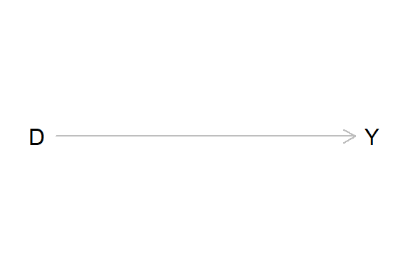
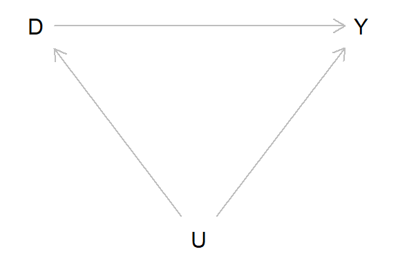
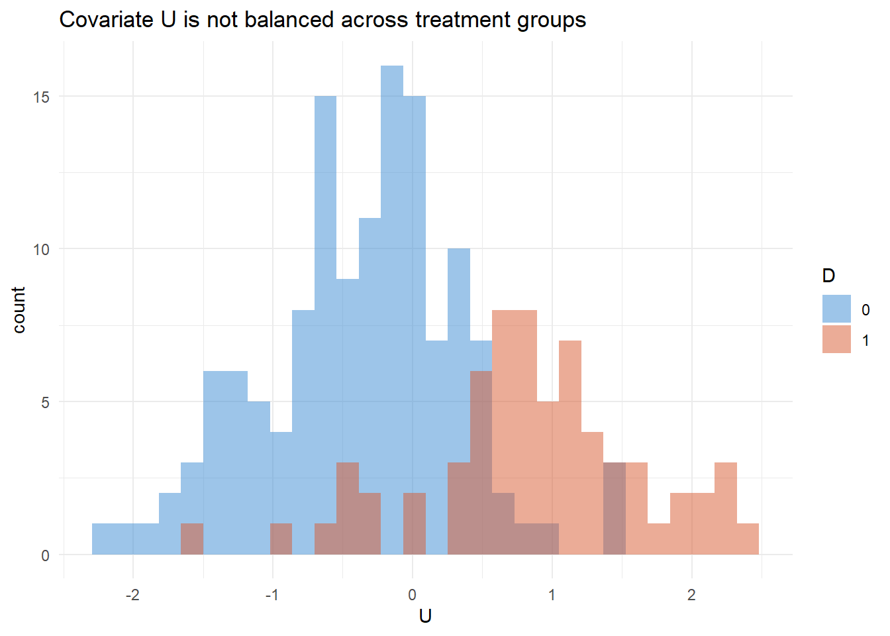
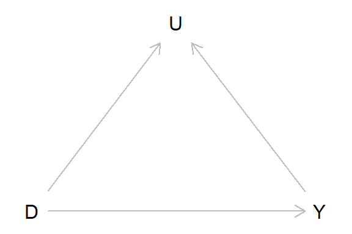
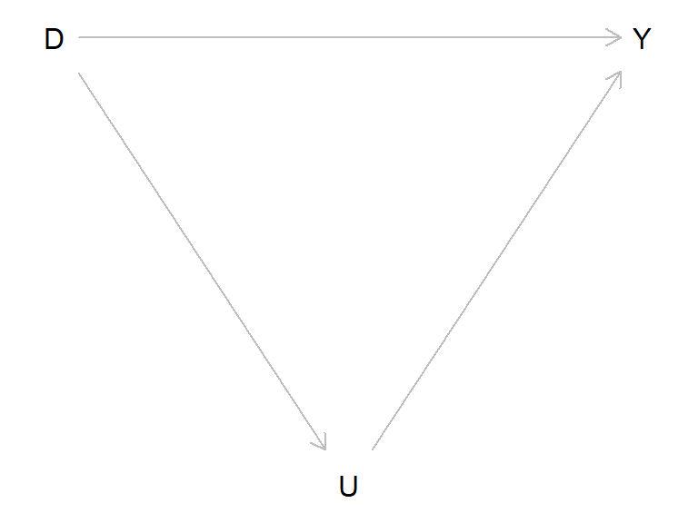
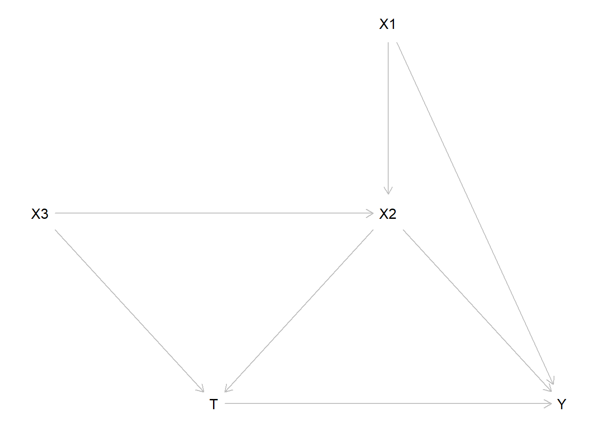
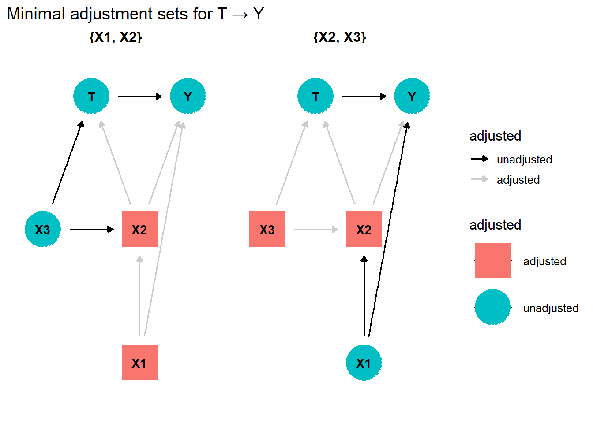

Code
library(igraph)
library(dagitty)
library(ggplot2)
library(dplyr)
library(MatchIt)
library(bnlearn)Confounders, Mediators, Colliders, and Matching Estimators
This document generates simulated data from simple causal structures and estimates treatment effects using adjusted regression, matching, and the g-formula. It draws on:
library(igraph)
library(dagitty)
library(ggplot2)
library(dplyr)
library(MatchIt)
library(bnlearn)The simplest structure: \(D \rightarrow Y\). No confounding; the regression coefficient for \(D\) directly recovers the causal effect.
g <- dagitty('dag {
D [pos="0,.1"]
Y [pos=".2,.1"]
D -> Y
}')
plot(g)
Structure: \(D \rightarrow Y\), \(U \rightarrow D\), \(U \rightarrow Y\).
\(U\) is a confounder — it causes both treatment and outcome, opening a back-door path \(D \leftarrow U \rightarrow Y\). Naive comparison of treated and control units conflates the causal effect of \(D\) with the selection effect of \(U\).
Identification strategy: block the back-door path by conditioning on \(U\). The adjustment formula gives:
\[P(Y=y \mid \text{do}(D=d)) = \sum_U P(Y=y \mid D=d, U=u)\,P(U=u)\]
and the ATE is \(E[Y \mid \text{do}(D=1)] - E[Y \mid \text{do}(D=0)]\).
For continuous \(U\), regression adjustment achieves this:
\[Y = \beta_0 + \beta_D D + \beta_U U + \varepsilon \quad \Rightarrow \quad \hat\beta_D = \text{causal effect of } D\]
g <- dagitty('dag {
D [pos="0,.1"]
Y [pos=".2,.1"]
U [pos=".1,.2"]
D -> Y
D <- U -> Y
}')
plot(g)
True SEM:
\[U \sim \mathcal{N}(0,1), \quad D = \mathbf{1}[U > 0.5], \quad Y = 10 + 20\,D + 5\,U + \varepsilon, \quad \varepsilon \sim \mathcal{N}(0, 1.5^2)\]
True causal effect of \(D\): \(\rho = 20\).
set.seed(1)
n <- 200
U <- rnorm(n, 0, 1)
p.overlap <- 0.1
D <- ifelse(U > 0.5,
ifelse(runif(n) > p.overlap, 1, 0),
ifelse(runif(n) > p.overlap, 0, 1))
rho <- 20
Y <- 10 + rho * D + 5 * U + rnorm(n, 0, 1.5)
# Naive (unadjusted) ATE
cat("Non-adjusted ATE (biased):", round(mean(Y[D==1]) - mean(Y[D==0]), 2), "\n")Non-adjusted ATE (biased): 26.04 cat("True causal effect (rho):", rho, "\n\n")True causal effect (rho): 20 # Covariate balance check
cat("Mean U | D=0:", round(mean(U[D==0]), 3),
" Mean U | D=1:", round(mean(U[D==1]), 3), "\n")Mean U | D=0: -0.369 Mean U | D=1: 0.857 Because \(D\) is assigned based on \(U\) (high-\(U\) individuals more likely to get \(D=1\)), and \(U\) also directly affects \(Y\), the treated group has higher \(Y\) on average for reasons unrelated to \(D\). The naive difference-in-means overestimates the causal effect.
df <- data.frame(U, Y, D = factor(D))
ggplot(df) +
geom_histogram(aes(U, fill = D), alpha = 0.5, position = "identity",
bins = 30) +
scale_fill_manual(values = c("0" = "#3B8BD4", "1" = "#D85A30")) +
labs(title = "Covariate U is not balanced across treatment groups",
x = "U", fill = "D") +
theme_minimal(base_size = 11)
Select only units where \(-0.75 < U < 0.25\) in both groups to create a balanced sample.
df_num <- data.frame(U, Y, D = as.numeric(as.character(df$D)))
ind0 <- which(df_num$D == 0)
ind1 <- which(df_num$D == 1)
ind.match0 <- ind0[U[df_num$D == 0] < 0.25 & U[df_num$D == 0] > -0.75]
ind.match1 <- ind1[U[df_num$D == 1] < 0.25 & U[df_num$D == 1] > -0.75]
df.matched <- df_num[c(ind.match0, ind.match1), ]
cat("Balance before matching — Mean U | D=0:", round(mean(U[ind0]), 3),
" D=1:", round(mean(U[ind1]), 3), "\n")Balance before matching — Mean U | D=0: -0.369 D=1: 0.857 cat("Balance after matching — Mean U | D=0:", round(mean(df.matched$U[df.matched$D==0]), 3),
" D=1:", round(mean(df.matched$U[df.matched$D==1]), 3), "\n\n")Balance after matching — Mean U | D=0: -0.27 D=1: -0.357 lm.matched <- lm(Y ~ D + U, df.matched)
cat("True causal effect:", rho, "\n")True causal effect: 20 cat("Estimate (manual match + regression):", round(coef(lm.matched)["D"], 2), "\n")Estimate (manual match + regression): 19.75 df_m <- data.frame(U, Y, D = as.integer(as.character(df$D)))
# Nearest-neighbour (optimal) matching
m_out <- matchit(D ~ U, data = df_m, method = "optimal")
m_data <- match.data(m_out, drop.unmatched = TRUE)
lm.match2 <- lm(Y ~ D + U, m_data)
# Coarsened exact matching
m_out_cem <- matchit(D ~ U, data = df_m, method = "cem")
m_data_cem <- match.data(m_out_cem, drop.unmatched = TRUE)
lm.match3 <- lm(Y ~ D + U, m_data_cem, weights = m_data_cem$weights)
knitr::kable(data.frame(
Method = c("True effect", "Naive (no adjustment)",
"Regression + full data", "Nearest-neighbour match",
"Coarsened exact match"),
Estimate = round(c(rho,
mean(Y[D==1]) - mean(Y[D==0]),
coef(lm(Y ~ D + U, df_m))["D"],
coef(lm.match2)["D"],
coef(lm.match3)["D"]), 2)
), caption = "ATE estimates under different adjustment strategies")| Method | Estimate |
|---|---|
| True effect | 20.00 |
| Naive (no adjustment) | 26.04 |
| Regression + full data | 19.62 |
| Nearest-neighbour match | 19.61 |
| Coarsened exact match | 21.00 |
df_m$Ulevel <- cut(df_m$U, breaks = quantile(df_m$U, c(0, 0.25, 0.5, 0.75, 1)))
df_m <- na.omit(df_m)
df.means <- df_m %>%
group_by(Ulevel, D) %>%
summarise(mean_Y = mean(Y), count = n(), .groups = "drop")
N0 <- sum(df_m$D == 0)
diff_means <- df.means$mean_Y[df.means$D == 1] - df.means$mean_Y[df.means$D == 0]
count_diff <- df.means$count[df.means$D == 0]
ate_strat <- sum(diff_means * count_diff) / N0
# G-computation (parametric g-formula for linear outcome)
Q <- lm(Y ~ D + U, data = df_m)
A1 <- df_m; A1$D <- 1
A0 <- df_m; A0$D <- 0
RD_gcomp <- mean(predict(Q, A1)) - mean(predict(Q, A0))
cat("Stratified weighted ATE:", round(ate_strat, 2), "\n")Stratified weighted ATE: 20.32 cat("G-computation ATE: ", round(RD_gcomp, 2), "\n")G-computation ATE: 19.63 cat("True causal effect: ", rho, "\n")True causal effect: 20 Structure: \(D \rightarrow U\), \(Y \rightarrow U\).
\(U\) is a collider — both \(D\) and \(Y\) cause it. Conditioning on a collider opens a spurious path between \(D\) and \(Y\) that does not exist in the true DAG. Do not adjust for colliders.
g_col <- dagitty('dag {
D [pos="0,1"]
Y [pos="2,1"]
U [pos="1,0"]
D -> U
Y -> U
D -> Y
}')
plot(g_col)
set.seed(42)
n <- 200
D_c <- ifelse(runif(n) > 0.5, 1, 0)
Y_c <- 10 + 20 * D_c + rnorm(n, 0, 1.5)
U_c <- ifelse(D_c == 1, rnorm(n, 5, 1), rnorm(n, 10, 1)) + 0.5 * Y_c
df.col <- data.frame(Y = Y_c, U = U_c, D = D_c)
lm.col.adj <- lm(Y ~ U + D, df.col)
lm.col.noadj <- lm(Y ~ D, df.col)
knitr::kable(data.frame(
Model = c("True effect", "Adjusted for collider U (biased)",
"Not adjusted (correct)"),
Estimate = round(c(20, coef(lm.col.adj)["D"], coef(lm.col.noadj)["D"]), 2)
), caption = "Collider bias: adjusting for U distorts the estimate")| Model | Estimate |
|---|---|
| True effect | 20.00 |
| Adjusted for collider U (biased) | 16.43 |
| Not adjusted (correct) | 19.97 |
Conditioning on a collider induces a spurious correlation between \(D\) and \(Y\) that is not causal. The unadjusted model correctly recovers the true effect of 20; the adjusted model is biased.
Structure: \(D \rightarrow U \rightarrow Y\) and \(D \rightarrow Y\).
\(U\) is a mediator — it lies on the causal path from \(D\) to \(Y\). This is the key structure also present in the smoking–BMI–diabetes example: Quit Smoking \(\rightarrow\) \(\Delta\)BMI \(\rightarrow\) T2D.
g_med <- dagitty('dag {
D [pos="0,1"]
Y [pos="2,1"]
U [pos="1,2"]
D -> Y
D -> U -> Y
}')
plot(g_med)
True SEM (linear, continuous outcome):
\[D \sim \text{Bernoulli}(0.5), \quad U = 10\,D + \varepsilon_U, \quad Y = 10 + 20\,D + 5\,U + \varepsilon_Y\]
The direct effect of \(D\) on \(Y\) is \(\beta_D = 20\). The indirect effect (via \(U\)) is \(\beta_U \times \delta = 5 \times 10 = 50\). The total effect is \(20 + 50 = 70\).
set.seed(7)
n <- 200
D_m <- ifelse(runif(n) > 0.5, 1, 0)
U_m <- 10 * D_m + rnorm(n, 0, 1)
Y_m <- 10 + 20 * D_m + 5 * U_m + rnorm(n, 0, 1.5)
cat("Mean U | D=1:", round(mean(U_m[D_m==1]), 2),
" Mean U | D=0:", round(mean(U_m[D_m==0]), 2), "\n")Mean U | D=1: 10.11 Mean U | D=0: -0.02 cat("(U is not balanced — it is caused by D, not a confounder)\n")(U is not balanced — it is caused by D, not a confounder)Adjusting for mediator \(U\) recovers the direct effect only. Omitting \(U\) recovers the total effect. In the linear case these follow algebraically from the structural coefficients:
\[\text{Direct effect} = \beta_D = 20\] \[\text{Indirect effect} = \beta_U \times \delta = 5 \times 10 = 50\] \[\text{Total effect} = \beta_D + \beta_U \delta = 70\]
where \(\delta = E[U \mid D=1] - E[U \mid D=0]\) is estimated from the auxiliary regression \(U \sim D\).
lm.adj <- lm(Y_m ~ U_m + D_m) # direct effect (controls for mediator)
lm.noadj <- lm(Y_m ~ D_m) # total effect (omits mediator)
# Auxiliary: how much does D shift U (the mediator)?
delta <- coef(lm(U_m ~ D_m))["D_m"]
knitr::kable(data.frame(
Quantity = c(
"True direct effect (β_D)",
"True indirect effect (β_U × δ)",
"True total effect (direct + indirect)",
"Estimated direct effect (lm with U)",
"Estimated indirect effect (β̂_U × δ̂)",
"Estimated total effect (lm without U)"
),
Value = round(c(
20, 5 * 10, 70,
coef(lm.adj)["D_m"],
coef(lm.adj)["U_m"] * delta,
coef(lm.noadj)["D_m"]
), 2)
), caption = "Regression-based mediation decomposition: direct, indirect, and total effects")| Quantity | Value |
|---|---|
| True direct effect (β_D) | 20.00 |
| True indirect effect (β_U × δ) | 50.00 |
| True total effect (direct + indirect) | 70.00 |
| Estimated direct effect (lm with U) | 18.40 |
| Estimated indirect effect (β̂_U × δ̂) | 52.22 |
| Estimated total effect (lm without U) | 70.62 |
The regression approach above works cleanly in the linear case because effects add on the same scale. For non-linear outcomes (e.g. logistic regression in the smoking example) we need the potential-outcomes framework of Imai, Keele, and Tingley (2010). We apply it here to the linear case so the machinery is transparent before the logistic application.
The two estimands are:
\[\text{ACME} = E\bigl[Y_i(1, M_i(1)) - Y_i(1, M_i(0))\bigr] \quad \text{(indirect / mediated effect)}\]
\[\text{ADE} = E\bigl[Y_i(1, M_i(0)) - Y_i(0, M_i(0))\bigr] \quad \text{(direct effect)}\]
In the linear SEM these reduce to \(\text{ACME} = \beta_U \delta = 50\) and \(\text{ADE} = \beta_D = 20\), matching the regression estimates above.
library(mediation)
df_med <- data.frame(D = D_m, U = U_m, Y = Y_m)
# Step 1: mediator model M ~ T + C (no confounders here; D is randomised)
med_lm <- lm(U ~ D, data = df_med)
# Step 2: outcome model Y ~ T + M + C
out_lm <- lm(Y ~ D + U, data = df_med)
# Step 3: mediate() simulates potential outcomes
med_lin <- mediate(med_lm, out_lm,
treat = "D",
mediator = "U",
sims = 500)
med_lin_tbl <- data.frame(
Component = c("ACME (indirect via U)",
"ADE (direct effect)",
"Total effect",
"Proportion mediated"),
Estimate = round(c(med_lin$d0, med_lin$z0,
med_lin$tau.coef, med_lin$n0), 2),
`95% CI` = c(
sprintf("[%.2f, %.2f]", med_lin$d0.ci[1], med_lin$d0.ci[2]),
sprintf("[%.2f, %.2f]", med_lin$z0.ci[1], med_lin$z0.ci[2]),
sprintf("[%.2f, %.2f]", med_lin$tau.ci[1], med_lin$tau.ci[2]),
"—"),
`True value` = c("50 (= β_U × δ = 5 × 10)",
"20 (= β_D)",
"70",
"71.4% (= 50/70)"),
check.names = FALSE
)
knitr::kable(med_lin_tbl,
caption = paste0(
"Causal mediation analysis (Imai et al. 2010) applied to the linear SEM. ",
"ACME and ADE match the true structural coefficients. ",
"In the linear case, mediation package results equal the regression decomposition above."))| Component | Estimate | 95% CI | True value |
|---|---|---|---|
| ACME (indirect via U) | 52.19 | [49.88, 54.71] | 50 (= β_U × δ = 5 × 10) |
| ADE (direct effect) | 18.45 | [16.39, 20.53] | 20 (= β_D) |
| Total effect | 70.63 | [69.16, 72.04] | 70 |
| Proportion mediated | 0.74 | — | 71.4% (= 50/70) |
In the linear case the g-formula reduces to g-computation: fit models for the mediator and outcome, then predict the outcome under the intervention \(\text{do}(D = t)\) by replacing observed \(U\) with the predicted counterfactual \(\hat U^{(t)}\):
\[\hat U_i^{(t)} = \hat\alpha_0 + \hat\alpha_1\,t\]
\[\hat Y_i^{(t)} = \hat\beta_0 + \hat\beta_1\,t + \hat\beta_2\,\hat U_i^{(t)}\]
\[\widehat{\text{ATE}} = \frac{1}{n}\sum_i \hat Y_i^{(1)} - \frac{1}{n}\sum_i \hat Y_i^{(0)}\]
For a linear SEM this equals the total effect coefficient from the unadjusted regression, but the three-step procedure generalises directly to the logistic case in the smoking example.
# Fit models on observed data
med_gform_lin <- lm(U ~ D, data = df_med)
out_gform_lin <- lm(Y ~ D + U, data = df_med)
gformula_linear <- function(df, treat_val) {
d_int <- df
d_int$D <- treat_val
# Step 1: predict mediator under intervention
d_int$U <- predict(med_gform_lin, newdata = d_int)
# Step 2: predict outcome using counterfactual mediator
mean(predict(out_gform_lin, newdata = d_int))
}
y_do1 <- gformula_linear(df_med, 1)
y_do0 <- gformula_linear(df_med, 0)
ate_gf <- y_do1 - y_do0
# Bootstrap CI
set.seed(42)
boot_lin <- replicate(500, {
b <- df_med[sample(nrow(df_med), replace = TRUE), ]
mm <- lm(U ~ D, data = b)
om <- lm(Y ~ D + U, data = b)
f <- function(tv) {
d <- b; d$D <- tv; d$U <- predict(mm, newdata = d)
mean(predict(om, newdata = d))
}
f(1) - f(0)
})
ci_lin <- quantile(boot_lin, c(0.025, 0.975))
knitr::kable(data.frame(
Quantity = c("E[Y | do(D=1)]", "E[Y | do(D=0)]",
"ATE = do(D=1) − do(D=0)",
"95% bootstrap CI", "True total effect"),
Value = c(round(y_do1, 2), round(y_do0, 2),
round(ate_gf, 2),
sprintf("[%.2f, %.2f]", ci_lin[1], ci_lin[2]),
"70")
), caption = paste0(
"G-formula ATE for the linear mediation SEM. ",
"The result matches the total effect from unadjusted regression ",
"and the TE from causal mediation — all three methods agree in the linear case."))| Quantity | Value |
|---|---|
| E[Y | do(D=1)] | 80.53 |
| E[Y | do(D=0)] | 9.9 |
| ATE = do(D=1) − do(D=0) | 70.62 |
| 95% bootstrap CI | [68.99, 72.22] |
| True total effect | 70 |
This linear mediation example and the smoking–BMI–diabetes logistic model share the same causal skeleton — \(D \rightarrow M \rightarrow Y\) and \(D \rightarrow Y\) — and the same core warning about conditioning on the mediator. The three methods implemented here (regression decomposition, causal mediation package, and g-formula) all agree in the linear case. In the smoking example they are also necessary to align, and the fact that they agree there too confirms the SEM parameters are being recovered correctly.
| Feature | Linear mediation (this section) | Smoking–BMI–Diabetes |
|---|---|---|
| Treatment \(D\) | Binary (randomised) | Quit smoking (0/1, confounded) |
| Mediator \(M\) | Continuous \(U = 10D + \varepsilon\) | \(\Delta\)BMI |
| Outcome \(Y\) | Continuous (linear SEM) | Binary T2D (logistic) |
| Direct effect | \(\beta_D = 20\) | log-odds \(= -0.30\) (OR \(\approx 0.74\)) |
| Indirect effect | \(\beta_U \times \delta = 5 \times 10 = 50\) | \(0.90 \times 0.20 = +0.18\) log-odds |
| Total effect | \(20 + 50 = 70\) | \(\approx -0.12\) log-odds |
| Direction of indirect | Same sign as direct (+50 adds to +20) | Opposite sign (offsets −0.30) |
| Bias from conditioning on \(M\) | Total effect underestimated | Protective effect overestimated |
| Correct approach (total effect) | Omit \(M\) from regression / g-formula | G-formula / causal mediation |
| Correct approach (direct effect) | Include \(M\) in regression / ADE | ADE from mediation package |
| Scale issue | Effects on same scale — algebra transparent | Log-odds \(\neq\) risk difference; delta method needed |
| All three methods agree? | ✅ Yes (linear case) | ✅ Yes (logistic, verified by SEM parameters) |
Key difference 1 — direction of the indirect effect. Here \(D\) increases \(U\) (\(\delta = 10 > 0\)) and \(U\) increases \(Y\) (\(\beta_U = 5 > 0\)), so the indirect path amplifies the total effect: \(\text{TE} = 70 > \text{DE} = 20\). In the smoking example quitting raises \(\Delta\)BMI (\(+0.90\) kg/m²) and raised BMI increases T2D risk (\(+0.20\) log-odds per unit), so the indirect path opposes the direct protective effect of quitting. This produces the clinically important near-zero ATE documented by Hu et al. (2018): the direct benefit of cessation is substantially cancelled in the short term by weight gain.
Key difference 2 — outcome scale. In the linear SEM, ACME and ADE are in units of \(Y\) and add to TE on the same scale. In the logistic SEM, the structural coefficients (\(-0.30\), \(+0.20\)) are on the log-odds scale, but mediation package and g-formula report results on the probability (risk difference) scale. The conversion requires the delta method: \(\Delta P \approx P(1-P) \cdot \Delta\eta \approx 0.05 \times 0.95 \times 0.30 \approx 0.014\), which explains why the ADE of \(\approx -0.012\) looks very different from \(-0.30\).
Key difference 3 — confounding. In this linear example \(D\) is randomised, so no confounder adjustment is needed. In the smoking example, quitting is self-selected (older, more active patients quit more), introducing confounding that must be handled by including \(\mathbf{C}\) in both the mediator and outcome models. The g-formula standardises over the observed confounder distribution to remove this selection bias.
What all three methods tell us in both examples: conditioning on the mediator when estimating the total effect of \(D\) is always wrong — it blocks the \(D \rightarrow M \rightarrow Y\) path. The g-formula and mediation package resolve this by explicitly modelling the mediator distribution under intervention and integrating over it, which is exactly what Feuerriegel et al. (2024) call for when embedding ML in a causal framework.
Given a complex DAG, dagitty can identify the minimal sufficient adjustment set to estimate the causal effect of treatment \(T\) on outcome \(Y\).
dag <- dagitty("dag {
X1 -> X2
X1 -> Y
X3 -> X2
X2 -> Y
X2 -> T -> Y
X3 -> T
}")
coordinates(dag) <- list(
x = c(X1=3, X2=3, X3=1, T=2, Y=4),
y = c(X1=1, X2=2, X3=2, T=3, Y=3)
)
exposures(dag) <- "T"
outcomes(dag) <- "Y"
plot(dag)
cat("Minimal sufficient adjustment sets:\n")Minimal sufficient adjustment sets:print(adjustmentSets(dag)){ X1, X2 }
{ X2, X3 }library(ggdag)
tidy_dag <- tidy_dagitty(dag)
ggdag_adjustment_set(tidy_dag, node_size = 14, text_col = "black") +
theme_dag() +
labs(title = "Minimal adjustment sets for T → Y")
When treatment is randomly assigned, naive regression recovers the causal effect without adjustment. When assignment depends on a covariate \(x\) (non-random), matching or adjustment is required.
set.seed(10)
n <- 200
x <- rnorm(n, 5.5, 0.5)
p.ov <- 0.1
D.rand <- ifelse(runif(n) > 0.5, 1, 0)
D.nonr <- ifelse(x < 5,
ifelse(runif(n) > p.ov, 1, 0),
ifelse(runif(n) > p.ov, 0, 1))
rho_r <- 5; alpha_r <- 1; gamma_r <- -1
y.rand <- alpha_r + rho_r * D.rand + gamma_r * x + rnorm(n, 0, 1.5)
y.nonr <- alpha_r + rho_r * D.nonr + gamma_r * x + rnorm(n, 0, 1.5)
lm.rand <- lm(y.rand ~ D.rand + x)
lm.nonr <- lm(y.nonr ~ D.nonr + x)
df_r <- data.frame(D = D.nonr, y = y.nonr, x = x)
m_nn <- matchit(D ~ x, data = df_r, method = "optimal")
m_cem <- matchit(D ~ x, data = df_r, method = "cem")
knitr::kable(data.frame(
Setting = c("True effect",
"Random assignment (regression)",
"Non-random (regression, full data)",
"Non-random (nearest-neighbour match)",
"Non-random (CEM)"),
Estimate = round(c(
rho_r,
coef(lm.rand)["D.rand"],
coef(lm.nonr)["D.nonr"],
coef(lm(y ~ D + x, match.data(m_nn, drop.unmatched=TRUE)))["D"],
coef(lm(y ~ D + x, match.data(m_cem, drop.unmatched=TRUE),
weights = match.data(m_cem, drop.unmatched=TRUE)$weights))["D"]
), 3)
), caption = "Effect of random vs non-random assignment on ATE recovery")| Setting | Estimate |
|---|---|
| True effect | 5.000 |
| Random assignment (regression) | 4.468 |
| Non-random (regression, full data) | 4.722 |
| Non-random (nearest-neighbour match) | 4.783 |
| Non-random (CEM) | 4.920 |